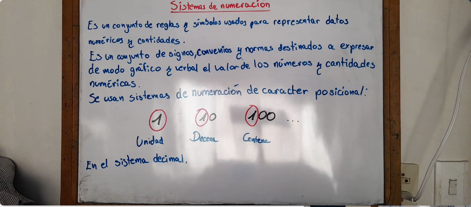
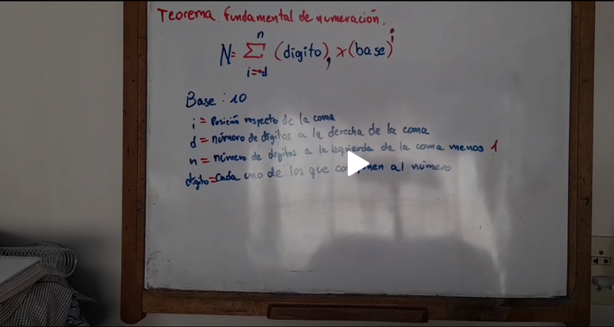
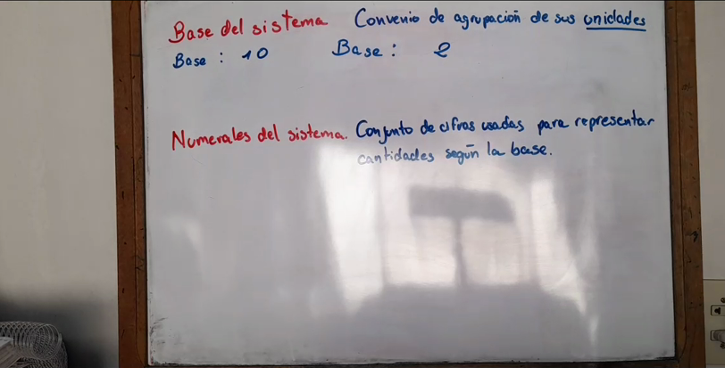
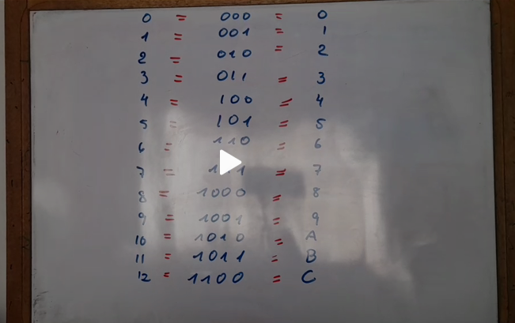
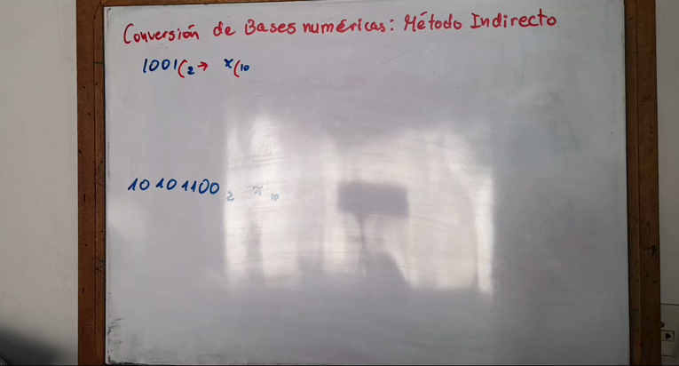
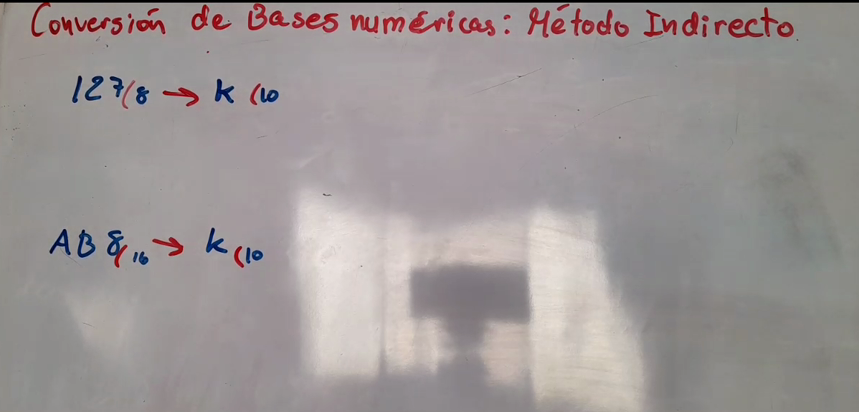
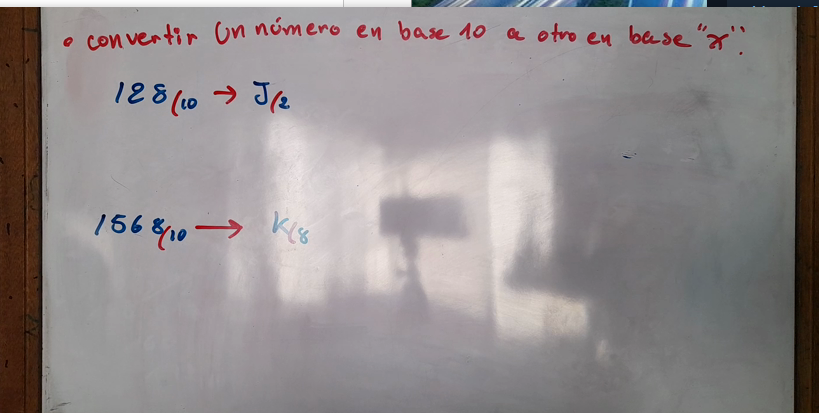
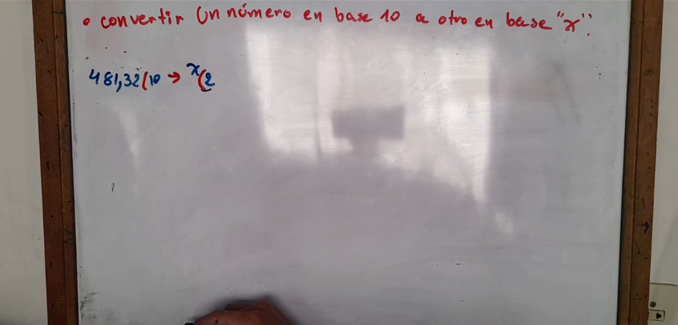

Material de estudio.
En esta sección se algunos videos tutoriales sobre la materia.
- Video de Introducción

- Teorema Fundamental de la Numeración

- Base y Numerales

- Ejemplo de bases

- Ejemplo 1 conversion indirecta TFN

- Ejemplo 2 conversion indirecta TFN

- Ejemplo 1 conversion indirecta Método divisiones sucesivas

- Ejemplo 2 conversion indirecta Método divisiones sucesivas
